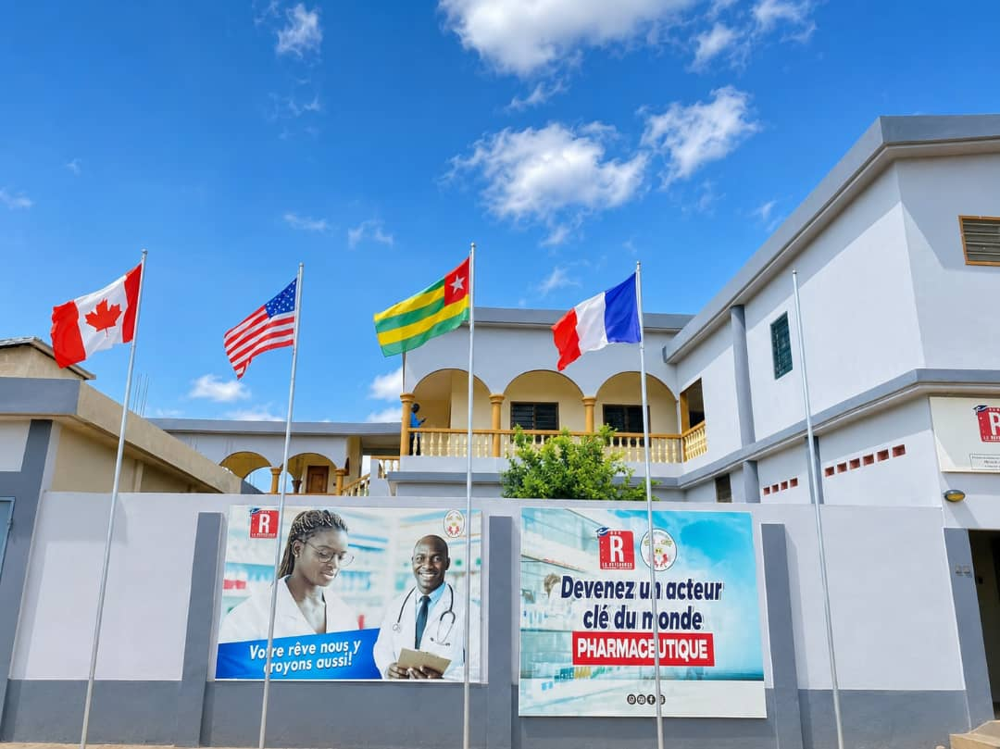

À propos
Une école de formation orientée vers le concret
Nous mettons à la disposition de nos apprenants un environnement d'apprentissage moderne, stimulant et professionnel pour développer leurs compétences au service de leur avenir.

+2500
Heures de formation dispensées
Le CFP La Reference a pour mission de former des citoyens compétents, responsables et capables de s’insérer efficacement dans le monde professionnel.
Nos programmes sont conçus pour renforcer les capacités techniques, la créativité, la discipline et la confiance en soi afin d’aider chacun à atteindre ses objectifs.
- Formations professionnalisantes et pratiques
- Encadrement personnalisé
- Ateliers, projets et mise en situation réelle
- Approche pédagogique moderne et accessible
Nos services
Des parcours conçus pour votre réussite
Formation initiale
Des programmes structurés pour les jeunes désireux d’acquérir des compétences dans des domaines porteurs et demandés.
Formation professionnelle
Des cursus pratiques qui répondent aux besoins du marché du travail et favorisent l’employabilité des apprenants.
Accompagnement
Nous accompagnons chaque apprenant dans son parcours grâce à un suivi régulier, des conseils et un encadrement humain.
Nos formations
Des domaines qui ouvrent des opportunités

Informatique
Informatique & Digital
Apprenez la bureautique, le web, les outils numériques et les bases du digital.

Commerce
Management & Commerce
Développez vos compétences en gestion, marketing, vente et leadership.

Entrepreneuriat
Entrepreneuriat & Projets
Créez, planifiez et développez votre propre projet entrepreneurial avec méthode.

Santé
Aide-soignante
Apprenez les gestes essentiels pour accompagner les patients et participer aux soins.

Santé
Auxiliaire en pharmacie
Développez les compétences nécessaires à l'accueil, au conseil et à la gestion en pharmacie.

Santé
Délégué médicale
Formez-vous à la présentation des produits de santé et à la relation avec les professionnels.

Santé
Assistant en laboratoire
Découvrez les bases de l'accueil, de la préparation et de l'organisation en laboratoire.
Chiffres clés
Une formation qui produit des résultats
0+
Programmes de formation disponibles
0+
Apprenants formés et accompagnés
0%
Taux de satisfaction des apprenants
Témoignages
Ce que disent nos apprenants
"J’ai découvert de nouvelles compétences et j’ai pu améliorer ma vie professionnelle. L’équipe est très disponible et attentive."
Sarah K.
Apprenante
"Le CFP La Reference m’a aidé à mieux organiser mes idées et à me lancer dans un projet concret. Une vraie opportunité."

Kossi T.
Stagiaire
"Les formateurs sont très pédagogues. J’ai appris des compétences utiles et j’ai gagné en confiance pour l’avenir."

Amélie D.
Apprenante

Prêt à faire le premier pas ?
Rejoignez le CFP La Reference et construisez demain dès aujourd’hui.